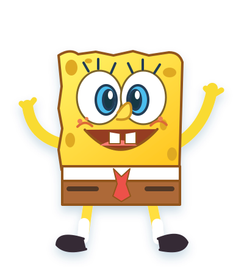

BOB ESPONJA SNAKE
Uma aventura na Fenda do Biquíni
O fundo do mar está te esperando!
Preparado para
mergulhar?
Uma fome de aventura.
Um oceano de diversão.

🍔✦1 Quem vai nessa aventura?
2 Escolha sua aventura
Colete hambúrgueres verdes para avançar e disparar nas quatro direções! Desvie dos canhões e derrote o Holandês na fase 11 para liberar o personagem e o modo infinito.
3 Qual é o seu ritmo?
🎮 Guia da Fenda do Biquíni
✦ Bullet Hell: colete 5 hambúrgueres por fase nas fases 1–4, 8 nas fases 5–7 e 10 nas fases 8–10. A velocidade só muda de fase para fase. Cada 3 hambúrgueres dão 3 segundos de imunidade, com contador reiniciado na próxima fase. Sombras avisam onde cairá um canhão: a bomba dispara em quatro direções. Na fase 11, os hambúrgueres alternam verde e vermelho; os verdes lançam quatro projéteis, com 2 de dano nos Planktons e 1 no chefe. Derrote o Holandês para desbloqueá-lo e seguir no infinito. Depois da fase 11, avance com 10 verdes por fase. O Holandês atravessa o próprio corpo e atira com C ou dois toques, destruindo obstáculos e causando 1 de dano, com recarga de 15 segundos.
Pontuação no Clássico: Fácil ×1, Médio ×2, Difícil ×3 (inclui bônus).
Poderes na Batalha — C ou dois toques rápidos: Bob gira a espátula e cria um hambúrguer amarelo à frente (recarga 30s; libere a célula à frente antes de usar). Patrick começa com uma bomba pronta, imune a todas as bombas (colisões e explosões), cuja explosão atinge toda a arena. Uma estrela gira ao criar a bomba. Para recarregar, derrote 1 Plankton por outros ataques; abates da bomba especial não contam. Sandy, exclusiva da Batalha, arma um karate que espera o próximo contato: causa 2 de dano, paralisa por 3s e dá 3s de imunidade a tudo. Sandy começa com 2 usos; depois de gastar os dois, cada 2 abates recuperam 1 uso, até o limite de 3. Uma luva gira ao redor dela enquanto o golpe está armado. Durante os 3s de imunidade, Sandy fica transparente. Na primeira Batalha, um treino jogável com Bob ensina as mecânicas, desacelerando até pausar a cada situação. Repita pelo botão Tutorial modo batalha.
⚔ Batalha: começa com um Plankton verde; os próximos duelos trazem inimigos laranja e vermelho, mais agressivos. Depois, cada grupo enfrenta três níveis de agressividade antes de aumentar: 2, 3, 4… até 10 Planktons vermelhos simultâneos. Cada hambúrguer vermelho acerta o inimigo mais próximo e paralisa por 3 segundos. A cada 10 hambúrgueres, solte um sopro congelante em cone que alcança o último Plankton naquela direção: 2 de dano no primeiro inimigo e 1 nos demais, congelados por 3 segundos. A cobra volta ao tamanho inicial. Derrotar um Plankton vermelho de agressividade máxima faz aparecer um hambúrguer amarelo de imunidade e turbo por 6 segundos. As barras de vida ficam sobre cada inimigo. Bombas explodem quando um Plankton pisa nelas: causam 1 de dano aos inimigos num raio de 15 células. Você é imune à explosão, mas Patrick também é imune à colisão de todas as bombas. Para os outros personagens, pisar na bomba conta como colisão com obstáculo (os poderes de atravessar obstáculos e imunidade protegem). Derrote todos para passar de onda. Vida por onda: nas ondas 1–2, todos têm 3; nas ondas 3–5, verdes têm 4 e os demais 3; da onda 6 em diante, verdes têm 5, laranjas 4 e vermelhos 3. Na Batalha, a velocidade base é constante; apenas o hambúrguer amarelo dá turbo temporário. Seu recorde na Batalha conta Planktons derrotados e fica salvo neste navegador. A dificuldade controla a velocidade e a densidade dos obstáculos.
No computador, use as setas ou WASD. No celular, arraste o dedo sobre o tabuleiro para mudar de direção sem levantá-lo, ou escolha Joystick ou D-Pad no menu. Na Batalha, dois toques rápidos no mapa ativam o poder; o botão de poder é opcional. Cada hambúrguer dá +10 pontos e faz a cobra crescer. As bordas são portais: saia por um lado e reapareça no oposto, inclusive em cima e embaixo!
- 🍔Laranja · Clássico
Alimenta e aumenta sua pontuação. - GRoxo · Fantasma
Atravesse o próprio corpo por 8 segundos. - OAzul · Passagem livre
Atravesse pedras e casas por 8 segundos. - ⚡Amarelo · Super
Imunidade ao corpo, obstáculos e Plankton, com supervelocidade por 6 segundos. - MRosa · Ímã
Por 10 segundos, puxa os hambúrgueres até você, atravessando obstáculos. - ϟVermelho · Hambúrguer de Siri
Durante a perseguição, cada vermelho dispara um raio automático no Plankton. A sequência é sempre: normal → vermelho → normal → vermelho → normal → vermelho.
👁 Plankton malvado no Clássico: aparece a cada 200 pontos e persegue você, atravessando obstáculos. Alterne hambúrgueres normais com 3 hambúrgueres de Siri vermelhos para derrotá-lo. Cada raio paralisa o inimigo por 3 segundos; a vitória dá +50 pontos. Enquanto ele estiver paralisado, encostar nele é seguro.
Os poderes podem ser combinados: cada efeito ativo aparece em uma indicação compacta dentro do mapa, com nome, tempo restante e barra de duração. Ela fica fixa no canto superior esquerdo, sem mover ou redimensionar o tabuleiro. Até 3 poderes podem ficar ativos ao mesmo tempo; nesse limite, só aparecem hambúrgueres normais até um efeito acabar (a sequência de vermelhos do Plankton continua). O personagem fica translúcido ao atravessar obstáculos (azul) e ganha um brilho roxo para atravessar o corpo. Hambúrgueres especiais são mais raros no Médio (22%) e no Difícil (10%), contra 60% no Fácil. Plankton persegue mais rápido no Médio e ainda mais no Difícil. Ao terminarem, as colisões voltam ao normal. A pausa congela poderes e inimigos. Na tela de pausa, Silenciar música controla a trilha; Silenciar sons controla os efeitos de coleta, laser e morte; Silenciar tudo corta ambos e Restaurar áudio recupera suas preferências individuais. As preferências ficam salvas. Os efeitos são sintetizados pelo jogo, sem gravações de terceiros. Em tela cheia, a pausa fica no canto superior direito. A cada 30 pontos os obstáculos mudam de lugar e de cor; a cada 100, o cenário muda. No Clássico, a velocidade aumenta um pouco; na Batalha, a velocidade base permanece constante.
Casas também são obstáculos: abacaxi do Bob, moai do Lula Molusco e pedra do Patrick. Sem o poder adequado, evite casas, pedras, seu corpo e o Plankton ativo.
Tela cheia no celular: a partida começa imediatamente; use o botão no topo para entrar ou sair da tela cheia. mantenha a orientação que preferir. No celular, o movimento é mais lento em todas as dificuldades, mantendo a progressão por fase no Clássico. A grade se adapta ao espaço da tela, inclusive ao girar o aparelho, com células maiores e proporções próximas de quadrados; em tela cheia, o mapa ocupa toda a tela, e os controles ficam sobre ele; no PC, mantém 30 × 21. Ao girar o aparelho, a grade é reorganizada preservando pontuação e progresso; se faltar espaço para todo o corpo, a cauda é reduzida para manter a cobra segura. A quantidade de células acompanha a proporção da tela. A faixa acima do mapa explica o hambúrguer disponível, sem cobrir o jogo. A vida do Plankton aparece em uma barra sem números e os raios vermelhos saem dos olhos do personagem. No celular, o controle inicial é arrastar o dedo no próprio tabuleiro, fazendo curvas sem levantar o dedo. Você pode escolher Joystick ou D-Pad no menu. Na Batalha, dois toques rápidos no mapa ativam o poder, e o botão de poder pode ser exibido nas opções. Na primeira partida, uma animação demonstra o gesto e o jogo desacelera enquanto você pratica, sem interromper a fase.
PERSONAGEM
Bob Esponja